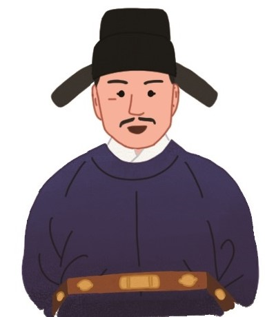

-
-
추가 질문조선 시대 학자 이현보는 효자로 유명했습니다. 그는 벼슬살이를 할 때에도 가까이서 부모님을 모시고 싶다는 생각에 지방의 벼슬자리를 원했고, 교통이 발달하지 않았던 시절이라 자신이 일하던 곳에서 부모님이 계신 곳까지 가는 데 꼬박 3일이 걸렸지만 부모님을 찾아뵙는 일을 게을리하지 않았습니다.
-
또한 그는 부모님을 잘 모시려고 고향에 정자를 만들어 그 정자의 이름을 ‘애일당’으로 지었습니다. ‘애일’은 ‘하루하루의 날을 아낀다. ’는 뜻으로, 나이 드신 부모님을 모실 날이 얼마 남지 않았다는 안타까운 마음을 담고 있습니다.
그는 70세를 바라보는 나이에도 아버지와 마을 노인들을 즐겁게 해 드리려고 어린아이처럼 -
색동옷을 입고 나이가 들어 하얗게 변한 머리카락을 휘날리며 애일당에서 춤을 추기도 했습니다.
-
다음 이야기를 읽고 어떤 생각이 드는지 이야기해 봅시다.
-
이야기 속 인물은 어떤 마음으로 위와 같은 행동을 했을까요?


부모님을 잘 모시고 싶은 마음이었을 것입니다.